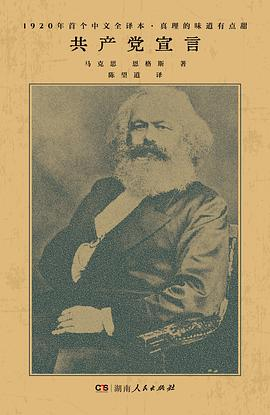

2022年2月
广播发布后不可编辑，所以每条都是那一刻的原话。
2022-02-28 22:25:32
 在读 红楼梦 ★★★★★
在读 红楼梦 ★★★★★
2022-02-28 22:24:10
读过 边城 ★★★★★
什么也没说的爱。（记，为什么，为什么都是悲剧啊，为什么不能告诉我结局呢？为什么？！）
2022-02-27 11:43:40

理想，或者说，以后的路还没想好。
2022-02-25 23:18:37
读过 雷雨 ★★★★★
不错。
2022-02-25 12:11:18
想读 霸王别姬
2022-02-25 12:02:48
读过 西游记（全二册） ★★★★★
2022-02-25 12:01:45
想读 野草
2022-02-25 11:58:44
想读 动物农场
2022-02-24 12:30:51
 读过 一九八四 ★★★★★
读过 一九八四 ★★★★★
社会主义的乌托邦。
2022-02-21 22:52:26
在读 雷雨 ★★★★★
2022-02-19 23:53:58
 看过 DAICON FILM版 归来的奥特曼 / DAICON FILM版 帰ってきたウルトラマン マットアロー1号発進命令 ★★★★☆
看过 DAICON FILM版 归来的奥特曼 / DAICON FILM版 帰ってきたウルトラマン マットアロー1号発進命令 ★★★★☆
惊艳的出场。
2022-02-19 23:39:29
 看过 横道世之介 ★★★★★
看过 横道世之介 ★★★★★
怎么说，也是这样的人会做的事情了。
2022-02-19 22:08:58
想看 横道世之介
2022-02-18 12:10:06
关注榜单 日本爱情片榜
2022-02-17 22:37:25

2022-02-17 22:33:44
读过 给青年的十二封信 ★★★★★
良师。
2022-02-16 12:40:40
2022-02-13 18:52:01
 想看 小丑 / Joker
想看 小丑 / Joker
2022-02-13 18:48:08

2022-02-13 15:35:36
 看过 风中有朵雨做的云 ★★★★☆
看过 风中有朵雨做的云 ★★★★☆
2022-02-13 10:22:51
收藏小组讨论到豆列 理解


2022-02-12 22:14:49
 看过 钢琴家 / The Pianist ★★★★★
看过 钢琴家 / The Pianist ★★★★★
也许我只能看到战争。
2022-02-11 15:50:09
 看过 霸王别姬 ★★★★★
看过 霸王别姬 ★★★★★
这配乐，倒使这影片成了戏。
2022-02-08 21:08:13
 看过 蝴蝶效应 / The Butterfly Effect ★★★★★
看过 蝴蝶效应 / The Butterfly Effect ★★★★★
鳞次栉比。
2022-02-06 21:43:30
 看过 银翼杀手2049 / Blade Runner 2049 ★★★★★
看过 银翼杀手2049 / Blade Runner 2049 ★★★★★
虚拟。
2022-02-05 22:15:29
在读 一九八四 ★★★★★
社会主义的乌托邦。
2022-02-05 21:57:41
 在看 幸运星 / らき☆すた ★★★★★
在看 幸运星 / らき☆すた ★★★★★
节奏脑洞都挺好。
2022-02-04 21:34:51
 看过 魔法少女小圆 / 魔法少女まどか☆マギカ ★★★★★
看过 魔法少女小圆 / 魔法少女まどか☆マギカ ★★★★★
风格。（后记，逃跑着，却进了黑暗。）
2022-02-04 15:22:55
 在看 更衣人偶坠入爱河 / その着せ替え人形は恋をする ★★★★☆
在看 更衣人偶坠入爱河 / その着せ替え人形は恋をする ★★★★☆
有趣。
2022-02-04 14:33:18
 听过 『ヨスガノソラ』オリジナルサウンドトラック-New- ★★★★★
听过 『ヨスガノソラ』オリジナルサウンドトラック-New- ★★★★★
无论到哪我都听得出来。
2022-02-03 13:39:33
在看 魔法少女小圆 / 魔法少女まどか☆マギカ ★★★★★
风格。
2022-02-03 11:34:01
 看过 我和我的家乡 ★★★★☆
看过 我和我的家乡 ★★★★☆
挺好，立意挺好，就是创作没跟上。
2022-02-02 17:03:43
 看过 凉宫春日的消失 / 涼宮ハルヒの消失 ★★★★★
看过 凉宫春日的消失 / 涼宮ハルヒの消失 ★★★★★
像是选择了有趣的童真。
2022-02-01 23:32:52
2022-02-01 22:24:37
 看过 凉宫春日的忧郁2009 / 涼宮ハルヒの憂鬱2009 ★★★★★
看过 凉宫春日的忧郁2009 / 涼宮ハルヒの憂鬱2009 ★★★★★
太有趣了。（额滴个娘啊，八月，和电话。）